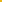
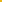

Menu
 Dè Basis
Dè Basis
Dè Mannen
Hèt Verhaal
Hèt Fotoboek
Dè Uitspraken
Hèt Forum
|
Dè Jaarclub Reineart
Waarde Audentianen en anderen,
Waar iedereen natuurlijk op zit te wachten en veel vrouwen naar smachten,
is een inleidend verhaaltje.
Luister, dit verhaal zal gaan over de Heeren van Reineart en hoe de levenspaden
elkaar op illustere wijze hebben gekruist. Sterke karakters trekken elkaar natuurlijk
altijd aan, maar dìt was duidelijk voorbestemd. Onze Heeren hebben allen
de vies smerige tijd van de KMT of de NKT mogen doorlopen, een ware eer. Daarna
begon het jaarclubtraject, de Heeren hadden elkaar al snel gevonden. Geweldige
vooruitzichten, ruige avonden, veel gezelligheid tot in de vroege uurtjes,
enfìn een mooie tijd. Er ontwikkelde zich een ware jaarclub met Borrels,
altijd leuk, altijd geinig, altijd smerig.
|
|
Hieronder volgt een klein literair hoogstandje, over elke Vos wat wils.
Coenraad:
Zuipen met Coen is als geld brengen naar de Derde Wereld Landen.
Het enige verschil is dat Coen daarnaast bijna altijd op 4 wielen naar huis gaat
Ondanks deze feiten, blijft Coen toch nog een nuchtere Hollander.
Peter:
Peter zal volgend jaar vast geen verjaardagsborrel meer geven, bij deze.
Als hij schilder had willen worden dan had hij er niet voor hoeven leren.
Maar een feestje van Peter zal iedereen zich altijd nog lang heugen.
Ewout:
Ewout zit zo gebeiteld, dat geen enkele uitnodiging hem van zijn plaats kan krijgen.
Als Ewout zat is, kun je beter meteen gaan lopen.
Bij elk feest is Ewout het beest.
Jelle:
Jelle op dreef -> de mores staan scheef.
De roze bril die hij op heeft, moeten veel mensen leren te waarderen.
Ondanks lage frequentie ontvant hij alle golven
Jeroen:
Jeroen weet aan bijna elke zin een onbegrijpelijke draai te geven, die velen niet
direct begrijpen. Gekke buien geen probleem, dan is de realiteit ver te zoeken.
Kortom een fijne gozer met veel wijsheid.
Ruurd:
Ziet ze af en toe vliegen, maar weet ze toch te vangen.
Hij heeft op boksen gezeten, en plukt hier nu de vruchten van.
Sytse:
Sietse is de liefdadigheidsinstelling van de jaarclub, niet alleen
heeft zijn huis een mooi uitzicht over de stad, maar de mini-bar mag er
zeker ook zijn. Tevens is Sytse altijd aanwezig.
Tim:
Beweert de grootste corporale zuipschuit te zijn, is altijd op de kroeg te vinden.
Zijn huis is een villa, waar hij van alles voor over heeft
Als Tim eenmaal op dreef is ben je zijn geouwehoer nooit zat.
Wessel:
Onbegrijpelijke verhalen die toch leuk blijken te zijn.
Snapt soms niet dat sommige mensen even privé willen hebben.
Van de andere kant een toegevoegde waarde.
|

 
